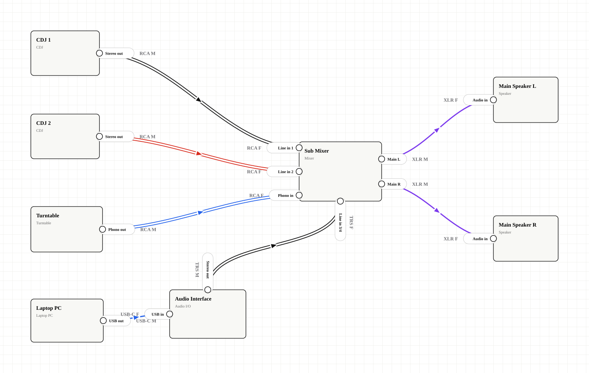

Fast cable drawing
Hover over gear, drag from the connection dot, and attach the cable to another device without prebuilding every port.

GearPatch
Build clear, printable wiring diagrams for live sound, DJ setups, home studios, and venue handoffs. Drag gear onto the canvas, connect cables from the nearest edge, label terminals, and export the result as PDF, PNG, SVG, or JSON.
Why it helps
GearPatch is made for the messy middle between a stage plot, an input list, and a cable checklist. It keeps the diagram visual enough for performers and detailed enough for engineers.
Hover over gear, drag from the connection dot, and attach the cable to another device without prebuilding every port.
Show the role, connector shape, and gender at each end: Audio out, Line in, XLR M, RCA F, USB-C, MIDI, SpeakON, or a custom label.
Use color, dashed lines, double lines, and direction arrows to separate analog audio, digital links, MIDI, speaker lines, or stereo pairs.
Autosave and history live in the browser. You decide when to export or share a file.
Workflow
Use cases
Share what connects to the stagebox, what returns to monitors, and which adapters may be needed before show day.
Document CDJs, turntables, mixers, interfaces, laptops, MIDI controllers, drum machines, and stereo outputs in one view.
Clarify vocal mics, DI boxes, guitar amps, bass amps, monitor wedges, and main speaker paths for the people setting the stage.
Support
GearPatch is free to use. If it saves you time before load-in, you can support ongoing development via PayPal.